<!DOCTYPE html>
<html lang="en"><head>
<link href="../../../../assets/favicon.png" rel="icon" type="image/png">
<script src="../../../../site_libs/cookie-consent/cookie-consent.js"></script>
<link href="../../../../site_libs/cookie-consent/cookie-consent.css" rel="stylesheet">
<script src="../../../../site_libs/clipboard/clipboard.min.js"></script>
<script src="../../../../site_libs/quarto-html/tabby.min.js"></script>
<script src="../../../../site_libs/quarto-html/popper.min.js"></script>
<script src="../../../../site_libs/quarto-html/tippy.umd.min.js"></script>
<link href="../../../../site_libs/quarto-html/tippy.css" rel="stylesheet">
<link href="../../../../site_libs/quarto-html/light-border.css" rel="stylesheet">
<link href="../../../../site_libs/quarto-html/quarto-syntax-highlighting-549806ee2085284f45b00abea8c6df48.css" rel="stylesheet" id="quarto-text-highlighting-styles"><meta charset="utf-8">
  <meta name="generator" content="quarto-1.6.40">

  <meta name="author" content="Andy Weeger">
  <meta name="dcterms.date" content="2025-02-21">
  <title>awe.lectures – Intelligence and affectiveness</title>
  <meta name="apple-mobile-web-app-capable" content="yes">
  <meta name="apple-mobile-web-app-status-bar-style" content="black-translucent">
  <meta name="viewport" content="width=device-width, initial-scale=1.0, maximum-scale=1.0, user-scalable=no, minimal-ui">
  <link rel="stylesheet" href="../../../../site_libs/revealjs/dist/reset.css">
  <link rel="stylesheet" href="../../../../site_libs/revealjs/dist/reveal.css">
  <style>
    code{white-space: pre-wrap;}
    span.smallcaps{font-variant: small-caps;}
    div.columns{display: flex; gap: min(4vw, 1.5em);}
    div.column{flex: auto; overflow-x: auto;}
    div.hanging-indent{margin-left: 1.5em; text-indent: -1.5em;}
    ul.task-list{list-style: none;}
    ul.task-list li input[type="checkbox"] {
      width: 0.8em;
      margin: 0 0.8em 0.2em -1em; /* quarto-specific, see https://github.com/quarto-dev/quarto-cli/issues/4556 */ 
      vertical-align: middle;
    }
    /* CSS for citations */
    div.csl-bib-body { }
    div.csl-entry {
      clear: both;
      margin-bottom: 0em;
    }
    .hanging-indent div.csl-entry {
      margin-left:2em;
      text-indent:-2em;
    }
    div.csl-left-margin {
      min-width:2em;
      float:left;
    }
    div.csl-right-inline {
      margin-left:2em;
      padding-left:1em;
    }
    div.csl-indent {
      margin-left: 2em;
    }  </style>
  <link rel="stylesheet" href="../../../../site_libs/revealjs/dist/theme/quarto-917f7d0931e4d057dbd0e317cc8d9514.css">
  
  <script type="text/javascript" charset="UTF-8">
  document.addEventListener('DOMContentLoaded', function () {
  cookieconsent.run({
    "notice_banner_type":"interstitial",
    "consent_type":"express",
    "palette":"dark",
    "language":"en",
    "page_load_consent_levels":["strictly-necessary"],
    "notice_banner_reject_button_hide":false,
    "preferences_center_close_button_hide":false,
    "website_name":""
    ,
  "language":"en"
    });
  });
  </script> 
    
  <link href="../../../../site_libs/revealjs/plugin/quarto-line-highlight/line-highlight.css" rel="stylesheet">
  <link href="../../../../site_libs/revealjs/plugin/reveal-menu/menu.css" rel="stylesheet">
  <link href="../../../../site_libs/revealjs/plugin/reveal-menu/quarto-menu.css" rel="stylesheet">
  <link href="../../../../site_libs/revealjs/plugin/quarto-support/footer.css" rel="stylesheet">
  <style type="text/css">
    .reveal div.sourceCode {
      margin: 0;
      overflow: auto;
    }
    .reveal div.hanging-indent {
      margin-left: 1em;
      text-indent: -1em;
    }
    .reveal .slide:not(.center) {
      height: 100%;
    }
    .reveal .slide.scrollable {
      overflow-y: auto;
    }
    .reveal .footnotes {
      height: 100%;
      overflow-y: auto;
    }
    .reveal .slide .absolute {
      position: absolute;
      display: block;
    }
    .reveal .footnotes ol {
      counter-reset: ol;
      list-style-type: none; 
      margin-left: 0;
    }
    .reveal .footnotes ol li:before {
      counter-increment: ol;
      content: counter(ol) ". "; 
    }
    .reveal .footnotes ol li > p:first-child {
      display: inline-block;
    }
    .reveal .slide ul,
    .reveal .slide ol {
      margin-bottom: 0.5em;
    }
    .reveal .slide ul li,
    .reveal .slide ol li {
      margin-top: 0.4em;
      margin-bottom: 0.2em;
    }
    .reveal .slide ul[role="tablist"] li {
      margin-bottom: 0;
    }
    .reveal .slide ul li > *:first-child,
    .reveal .slide ol li > *:first-child {
      margin-block-start: 0;
    }
    .reveal .slide ul li > *:last-child,
    .reveal .slide ol li > *:last-child {
      margin-block-end: 0;
    }
    .reveal .slide .columns:nth-child(3) {
      margin-block-start: 0.8em;
    }
    .reveal blockquote {
      box-shadow: none;
    }
    .reveal .tippy-content>* {
      margin-top: 0.2em;
      margin-bottom: 0.7em;
    }
    .reveal .tippy-content>*:last-child {
      margin-bottom: 0.2em;
    }
    .reveal .slide > img.stretch.quarto-figure-center,
    .reveal .slide > img.r-stretch.quarto-figure-center {
      display: block;
      margin-left: auto;
      margin-right: auto; 
    }
    .reveal .slide > img.stretch.quarto-figure-left,
    .reveal .slide > img.r-stretch.quarto-figure-left  {
      display: block;
      margin-left: 0;
      margin-right: auto; 
    }
    .reveal .slide > img.stretch.quarto-figure-right,
    .reveal .slide > img.r-stretch.quarto-figure-right  {
      display: block;
      margin-left: auto;
      margin-right: 0; 
    }
  </style>
<meta property="og:title" content="Intelligence and affectiveness – awe.lectures">
<meta property="og:description" content="Future Technologies &amp; Media (FTM)">
<meta property="og:site_name" content="awe.lectures">
</head>
<body class="quarto-light">
<div class="footer custom">

    <div class="version">
        V1.1
    </div>

    <div class="footnote">
        Andy Weeger / Neu-Ulm University of Applied Sciences Neu-Ulm / Future Technologies and Media (FTM)
   </div>

    <div class="logo">
        <svg viewbox="0 0 125 39" xmlns="http://www.w3.org/2000/svg" version="1.1" space="preserve">
            <g>
             <title>HNU</title>
             <path d="m8.58222,0l7.5,0l0,12.7l-7.5,0l0,-12.7zm7.4,24.1l6.5,0l0,-3l-13.9,0l0,15.4l-3.9,0l0,2.3l11.3,0l0,-14.7zm24,-24.1l-7.4,0l0,36.5l-3.9,0l0,2.3l11.3,0l0,-38.8zm60.2,28.4c1.1,0 2.1,-0.1 2.9,-0.4c-1.3,-1.2 -1.9,-3.2 -1.9,-6.4l0,-21.6l-7.4,0l0,19.3c0,5.9 1.5,9.1 6.4,9.1z" id="svg_1"></path>
             <path d="m96.78222,37c2.8,1.6 6.4,2.5 10.6,2.5c11.2,0 17.7,-6 17.7,-16.3l0,-23.2l-7.4,0l0,21.1c0,11.3 -7.7,16.1 -17.6,16.1c-1.1,0 -2.2,-0.1 -3.3,-0.2zm-30.8,-27l-7.1,-10l-7.3,0l14.4,20.4l0,-10.4zm17,28.8l0,-38.8l-7.5,0l0,36.5l-3.5,0l1.7,2.3l9.3,0zm-24,-14.8l-8,-10.8l0,23.3l-3,0l0,2.3l11,0l0,-14.8z" id="svg_2"></path>
            </g>   
        </svg>
    </div>

</div>
  <div class="reveal">
    <div class="slides">

<section id="title-slide" data-background-color="#0333ff" data-background-image="../assets/bg.jpg" data-background-opacity="1" data-background-size="cover" class="quarto-title-block">
  <h1 class="title">Intelligence and affectiveness</h1>
  <p class="subtitle">Future Technologies &amp; Media (FTM)</p>

<div class="quarto-title-authors">
<div class="quarto-title-author">
<div class="quarto-title-author-name">
Andy Weeger 
</div>
        <p class="quarto-title-affiliation">
            Neu-Ulm University of Applied Sciences
          </p>
    </div>
</div>

  <p class="date">February 21, 2025</p>
</section>
<section>
<section id="revision" class="title-slide slide level1 headline-only vertical-center" data-background-color="#0333ff">
<h1>Revision</h1>
<!--

Schedule:

- Warm-up         10 min

-->
</section>
<section id="hypothesis-1" class="title-slide slide level2" data-background-color="#0333ff">
<h2>Hypothesis 1</h2>
<div class="large">
<p>Emerging information technologies enable <strong>multimodal</strong> and <strong>immersive</strong> systems.</p>
</div>
</section>

<section id="multimodality" class="title-slide slide level2">
<h2>Multimodality</h2>
<div class="large">
<p>Multimodality refers to the use of <span class="link-color">multiple modes of communication</span> to to create meaning.</p>
</div>
<div class="fragment">
<p>Multimodality implies that the use of several means of communication contributes to a better overall understanding of a message.</p>

</div>
<aside><div>
<p><span class="citation" data-cites="adami2016introducing">Adami (<a href="#/literature" role="doc-biblioref" onclick="">2016</a>)</span></p>
</div></aside></section>

<section id="immersion" class="title-slide slide level2">
<h2>Immersion</h2>
<div class="medium">
<p>Immersion refers to the state of <span class="link-color">being deeply engaged, absorbed, or submerged in an environment</span>, either physically or mentally.</p>
</div>
<div class="fragment">
<p>Immersion implies that the consciousness of the immersed person is detached from their physical self. Immersiveness is the quality or degree of being immersive.</p>

</div>
<aside><div>
<p><span class="citation" data-cites="suh2018state">Suh and Prophet (<a href="#/literature" role="doc-biblioref" onclick="">2018</a>)</span>, <span class="citation" data-cites="lee2013presence">Lee, Chung, and Lee (<a href="#/literature" role="doc-biblioref" onclick="">2013</a>)</span></p>
</div></aside></section>

<section id="interdependency" class="title-slide slide level2">
<h2>Interdependency</h2>
<div class="medium">
<p>Stimuli that determine the <span class="link-color">immersiveness</span> of environments created by technology are <span class="link-color">multimodal</span>.</p>
</div>
<div class="medium">
<p><span class="fragment fade-in-then-semi-out">Visual,</span> <span class="fragment fade-in-then-semi-out">auditory,</span> <span class="fragment fade-in-then-semi-out">tactile,</span> <span class="fragment fade-in-then-semi-out">olfactory, and</span> <span class="fragment fade-in-then-semi-out">interactive.</span></p>
</div>
</section>
</section>
<section id="hypothesis-2" class="title-slide slide level1" data-background-color="#0333ff">
<h1>Hypothesis 2</h1>
<div class="large">
<p>Emerging information technologies enable <strong>intelligent</strong> and <strong>affective</strong> systems.</p>
</div>
</section>

<section>
<section id="intelligence" class="title-slide slide level1 headline-only">
<h1>Intelligence</h1>

</section>
<section id="discussion" class="title-slide slide level2 discussion-slide" data-background-color="#000">
<h2>Discussion</h2>
<div class="medium">
<p>What do we mean<br>
by <strong>intelligence</strong>?</p>
</div>
<p>Provide a description that outlines what intelligence could mean.<br>
Take 5 minutes to reflect in small groups.</p>
</section>

<section id="human-intelligence" class="title-slide slide level2">
<h2>Human intelligence</h2>
<blockquote>
<p><strong>Human intelligence</strong> “covers the capacity to learn, reason, and adaptively perform effective actions within an environment, based on existing knowledge. This allows humans to adapt to changing environments and act towards achieving their goals.” <em><span class="citation" data-cites="dellermann2019hybrid">Dellermann et al. (<a href="#/literature" role="doc-biblioref" onclick="">2019, 632</a>)</span></em></p>
</blockquote>
<div class="fragment">
<p><span class="citation" data-cites="sternberg1985beyond">Sternberg et al. (<a href="#/literature" role="doc-biblioref" onclick="">1985</a>)</span> proposes three distinctive dimensions:</p>
<div>
<ul>
<li class="fragment"><strong>Componential intelligence</strong><br>
the ability to take apart problems and being able to see solutions not often seen</li>
<li class="fragment"><strong>Experiential intelligence</strong><br>
the ability to learn and adapt through evolutionary experience</li>
<li class="fragment"><strong>Contextual intelligence</strong><br>
the ability to create an ideal fit between the environment by adaptation, shaping, and selection</li>
</ul>
</div>
</div>
</section>

<section id="artificial-intelligence" class="title-slide slide level2">
<h2>Artificial intelligence</h2>
<blockquote>
<p>‘AI system’ means a machine-based systems designed to <span class="fragment highlight-current-blue">operate with varying levels of autonomy</span> and that may <span class="fragment highlight-current-blue">exhibit adaptiveness after deployment</span> and that, <span class="fragment highlight-current-blue">for explicit or implicit objectives, infers, from the input it received</span>, how to <span class="fragment highlight-current-blue">generate output such as content, predictions, recommendations, or decisions</span>, that can <span class="fragment highlight-current-blue">influence physical or virtual environment</span> <span class="citation" data-cites="euAIAct2024">(<a href="#/literature" role="doc-biblioref" onclick="">European Commission 2024</a>)</span>.</p>
</blockquote>
<div class="fragment">
<p>Based on this definition, three main properties of intelligent agents can be distinguished:</p>
</div>
<div class="medium">
<p><span class="fragment fade-in-then-semi-out">Capacity to work in a complex environment<a href="#/footnotes" class="footnote-ref" id="fnref1" role="doc-noteref" data-footnote-href="#/fn1" onclick=""><sup>1</sup></a>,</span> <span class="fragment fade-in-then-semi-out">cognitive abilities<a href="#/footnotes" class="footnote-ref" id="fnref2" role="doc-noteref" data-footnote-href="#/fn2" onclick=""><sup>2</sup></a>, and</span> <span class="fragment fade-in-then-semi-out">complex behavior<a href="#/footnotes" class="footnote-ref" id="fnref3" role="doc-noteref" data-footnote-href="#/fn3" onclick=""><sup>3</sup></a>.</span></p>
</div>
<aside></aside></section>

<section id="working-in-complex-environments" class="title-slide slide level2 headline-only" data-background-color="#f0f0f0">
<h2>Working in complex environments</h2>

</section>
<section id="agents-and-environments" class="title-slide slide level3">
<h3>Agents and environments</h3>
<div class="quarto-figure quarto-figure-left">
<figure>
<p></p>
<figcaption>Necessary components to interact with complex environments</figcaption>
</figure>
</div>
<aside class="notes">
<p>An agent is anything that can be viewed as perceiving its <strong>environment</strong> through <strong>sensors</strong> and acting upon that environment through <strong>actuators</strong>.</p>
<style type="text/css">
        span.MJX_Assistive_MathML {
          position:absolute!important;
          clip: rect(1px, 1px, 1px, 1px);
          padding: 1px 0 0 0!important;
          border: 0!important;
          height: 1px!important;
          width: 1px!important;
          overflow: hidden!important;
          display:block!important;
      }</style></aside>
</section>

<section id="example" class="title-slide slide level3">
<h3>Example</h3>
<div class="quarto-figure quarto-figure-left">
<figure>
<p>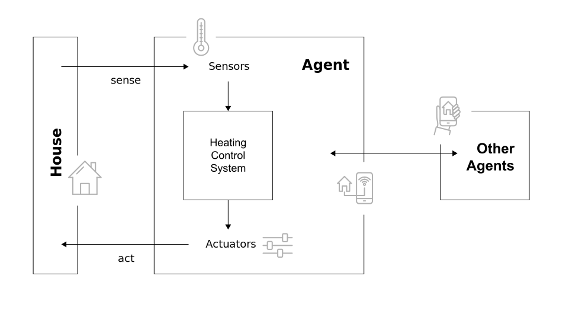</p>
<figcaption>Example for an intelligent systems</figcaption>
</figure>
</div>
</section>

<section id="task-environment" class="title-slide slide level3">
<h3>Task environment</h3>
<p>When designing an intelligent system, the <strong>task environment</strong> (i.e., the problem) must be specified as fully as possible, including</p>
<div class="medium">
<p><span class="fragment">Thep <span class="link-color">p</span>erformance measure</span><br>
<span class="fragment">the <span class="link-color">e</span>nvironment,</span><br>
<span class="fragment">the <span class="link-color">a</span>ctuators,</span><br>
<span class="fragment">and the <span class="link-color">s</span>ensors</span></p>
</div>
<div class="fragment">
<p><span class="citation" data-cites="RusselNorvig2022AIMA">Russel and Norvig (<a href="#/literature" role="doc-biblioref" onclick="">2022</a>)</span> call the task environment PEAS.</p>
</div>
<aside class="notes">
<div class="callout callout-note callout-titled callout-style-default">
<div class="callout-body">
<div class="callout-title">
<div class="callout-icon-container">
<i class="callout-icon"></i>
</div>
<p><strong>Example of an PEAS description</strong></p>
</div>
<div class="callout-content">
<p>Task environment of a taxi driver agent</p>
<ul>
<li><strong>P</strong>: Safe, fast, legal, comfortable, maximize profits, minimize impact on other road users</li>
<li><strong>E</strong>: Roads, other road users, police, pedestrians, customers, weather</li>
<li><strong>A</strong>: Steering, accelerator, brake, signal horn, display, speech</li>
<li><strong>S</strong>: Cameras, radar, speedometer, GPS, engine, sensors, accelerometer, microphones, touchscreen</li>
</ul>
<p>Source: <span class="citation" data-cites="RusselNorvig2022AIMA">Russel and Norvig (<a href="#/literature" role="doc-biblioref" onclick="">2022, 61</a>)</span></p>
</div>
</div>
</div>
<style type="text/css">
        span.MJX_Assistive_MathML {
          position:absolute!important;
          clip: rect(1px, 1px, 1px, 1px);
          padding: 1px 0 0 0!important;
          border: 0!important;
          height: 1px!important;
          width: 1px!important;
          overflow: hidden!important;
          display:block!important;
      }</style></aside>
</section>

<section id="properties" class="title-slide slide level3">
<h3>Properties</h3>
<p>Task environments can be categorized along following dimensions <span class="citation" data-cites="RusselNorvig2022AIMA">(<a href="#/literature" role="doc-biblioref" onclick="">Russel and Norvig 2022, 62–64</a>)</span>:</p>
<div>
<ul>
<li class="fragment">Fully observable ⇠⇢ partially observable</li>
<li class="fragment">Single agent ⇠⇢ multi-agent</li>
<li class="fragment">Deterministic ⇠⇢ nondeterministic</li>
<li class="fragment">Episodic ⇠⇢ sequential</li>
<li class="fragment">Static ⇠⇢ dynamic</li>
<li class="fragment">Discrete ⇠⇢ continuous</li>
<li class="fragment">Known ⇠⇢ unknown</li>
</ul>
</div>
<aside class="notes">
<p><strong>Explanations</strong></p>
<ul>
<li>If an agent’s sensors give it access to the full state of the environment at any point in time, then we say that the task environment is <em>fully observable</em> (e.g., image analysis).</li>
<li>When multiple agents intend to maximize a performance measure that depends on the behavior of other agents, we say the environment is <em>multi-agent</em> (e.g., chess).</li>
<li>When the environment is completely determined by the current state and the actions performed by the agent(s), it is called a <em>deterministic</em> environment (e.g., crossword puzzle). When a model of the environment explicitly uses probabilities, it is called a <em>stochastic</em> environment (e.g., poker).</li>
<li>If an agent’s experience is divided into atomic episodes in which the agent receives a perception and then performs a single action, and if the next episode does not depend on the actions performed in the previous episodes, then we say that the task environment is <em>episodic</em> (e.g., image analysis).</li>
<li>If the environment changes while an agent is deliberating, then the environment is <em>dynamic</em> (e.g., taxi driving).</li>
<li>If the environment has a finite number of different states, we speak of <em>discrete</em> environments (e.g., chess).</li>
<li>If the outcomes (or outcome probabilities) for all actions are given, then the environment is <em>known</em> (e.g., solitaire card game).</li>
</ul>
<p>Source: <span class="citation" data-cites="RusselNorvig2022AIMA">Russel and Norvig (<a href="#/literature" role="doc-biblioref" onclick="">2022</a>)</span>, p.62-64</p>
<style type="text/css">
        span.MJX_Assistive_MathML {
          position:absolute!important;
          clip: rect(1px, 1px, 1px, 1px);
          padding: 1px 0 0 0!important;
          border: 0!important;
          height: 1px!important;
          width: 1px!important;
          overflow: hidden!important;
          display:block!important;
      }</style></aside>
<aside class="notes">
<p>The hardest case is <em>partially observable, multi-agent, nondeterministic, sequential, dynamic, and continuous.</em></p>
<style type="text/css">
        span.MJX_Assistive_MathML {
          position:absolute!important;
          clip: rect(1px, 1px, 1px, 1px);
          padding: 1px 0 0 0!important;
          border: 0!important;
          height: 1px!important;
          width: 1px!important;
          overflow: hidden!important;
          display:block!important;
      }</style></aside>
</section>

<section id="exercise" class="title-slide slide level3 discussion-slide" data-background-color="#000">
<h3>Exercise</h3>
<div class="medium">
<p>Describe the task environment of a <strong>chess player</strong> and a <strong>autonomous car.</strong></p>
</div>
<p>Form small groups, take 15 minutes for this exercise and prepare yourself to present your findings.</p>
<aside class="notes">
<p><strong>Chess player:</strong></p>
<ul>
<li>static</li>
<li>discrete</li>
<li>fully-observable</li>
<li>deterministic</li>
<li>sequential</li>
<li>known</li>
</ul>
<p><strong>Autonomous car</strong></p>
<ul>
<li>dynamic</li>
<li>continuos</li>
<li>partial-observable</li>
<li>stochastic</li>
<li>sequential</li>
<li>known</li>
</ul>
<style type="text/css">
        span.MJX_Assistive_MathML {
          position:absolute!important;
          clip: rect(1px, 1px, 1px, 1px);
          padding: 1px 0 0 0!important;
          border: 0!important;
          height: 1px!important;
          width: 1px!important;
          overflow: hidden!important;
          display:block!important;
      }</style></aside>
</section>

<section id="autonomous-vs.-advisor-system" class="title-slide slide level3">
<h3>Autonomous vs.&nbsp;advisor system</h3>
<div class="r-stack">
<div class="quarto-figure quarto-figure-left">
<figure>
<p>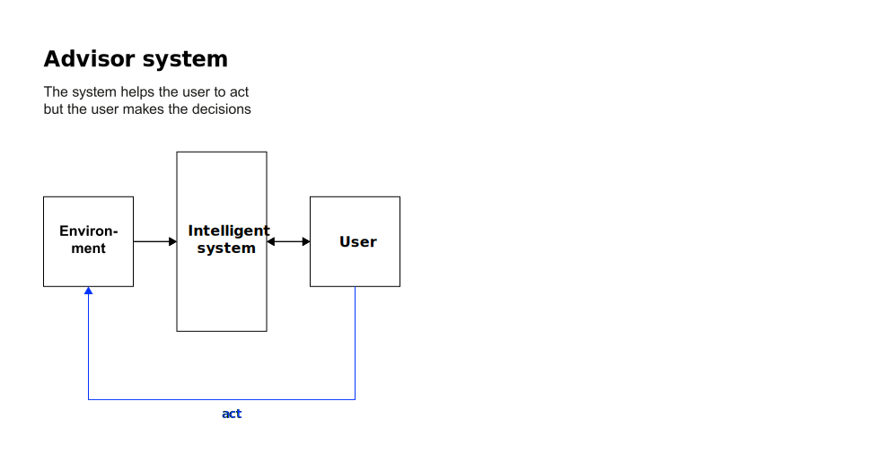</p>
<figcaption>Types of intelligent systems in terms of their interaction with the environment <span class="citation" data-cites="Molina2020Intelligent">(<a href="#/literature" role="doc-biblioref" onclick="">Molina 2020</a>)</span></figcaption>
</figure>
</div>
<div class="quarto-figure quarto-figure-left">
<figure>
<p>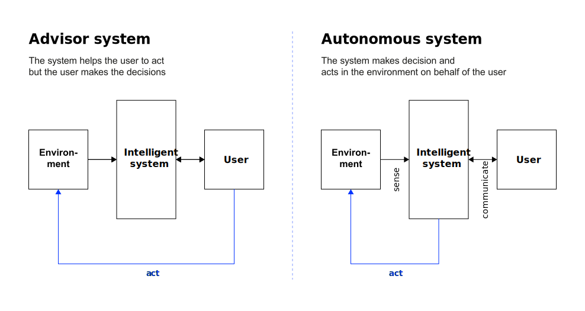</p>
<figcaption>&nbsp;</figcaption>
</figure>
</div>
</div>
</section>


<section id="cognitive-abilities" class="title-slide slide level2 headline-only" data-background-color="#f0f0f0">
<h2>Cognitive abilities</h2>

</section>
<section id="processing-mental-information" class="title-slide slide level3">
<h3>Processing mental information</h3>
<p>A cognitive ability is an ability that requires to process mental information <span class="citation" data-cites="carroll1993human">(<a href="#/literature" role="doc-biblioref" onclick="">Carroll 1993</a>)</span>.</p>
<div class="fragment">
<p>It refers to the skills involved in performing tasks associated with perception, understanding, reasoning, judgment, and language.</p>
</div>
<div class="fragment">
<p>There are four types of cognitive abilities:</p>
</div>
<div class="fragment">
<div class="medium">
<p><span class="fragment">Attention,</span> <span class="fragment">memory,</span> <span class="fragment">logic and reasoning,</span> <span class="fragment">auditory and visual processing.</span></p>
</div>
</div>
</section>

<section id="primary-cognitive-abilities" class="title-slide slide level3">
<h3>Primary cognitive abilities</h3>
<div class="r-stack">
<div class="quarto-figure quarto-figure-left">
<figure>
<p></p>
<figcaption>Primary cognitive abilities of intelligent systems based on <span class="citation" data-cites="Molina2020Intelligent">Molina (<a href="#/literature" role="doc-biblioref" onclick="">2020</a>)</span></figcaption>
</figure>
</div>
<div class="quarto-figure quarto-figure-left">
<figure>
<p></p>
<figcaption>&nbsp;</figcaption>
</figure>
</div>
<div class="quarto-figure quarto-figure-left">
<figure>
<p></p>
<figcaption>&nbsp;</figcaption>
</figure>
</div>
<div class="quarto-figure quarto-figure-left">
<figure>
<p>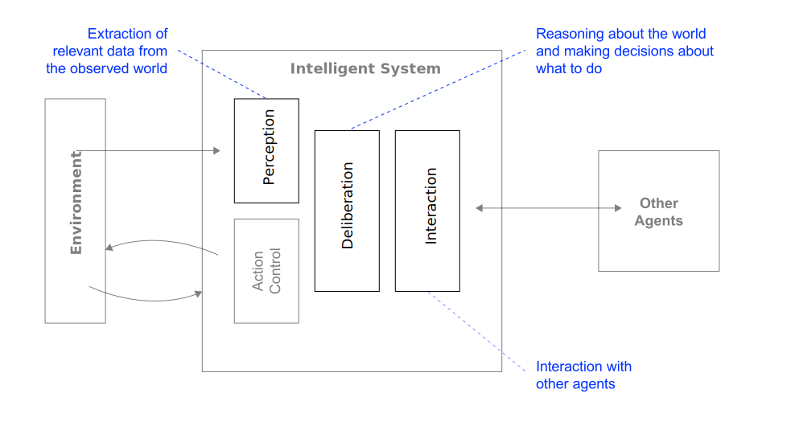</p>
<figcaption>&nbsp;</figcaption>
</figure>
</div>
<div class="quarto-figure quarto-figure-left">
<figure>
<p></p>
<figcaption>&nbsp;</figcaption>
</figure>
</div>
</div>
</section>

<section id="exercise-1" class="title-slide slide level3 discussion-slide" data-background-color="#000">
<h3>Exercise</h3>
<div class="medium">
<p>Describe the basic cognitive abilities of an <strong>autonomous car.</strong></p>
</div>
<p>Form small groups, take 10 minutes for this exercise.<br>
Prepare yourself to present your findings.</p>
</section>

<section id="deliberation-and-reactive-behavior" class="title-slide slide level3">
<h3>Deliberation and reactive behavior</h3>
<div class="quarto-figure quarto-figure-left">
<figure>
<p>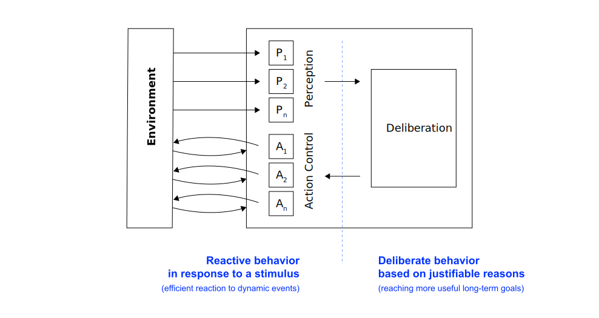</p>
<figcaption>Different types of behavior require different “thinking systems” based on <span class="citation" data-cites="Molina2020Intelligent">Molina (<a href="#/literature" role="doc-biblioref" onclick="">2020</a>)</span></figcaption>
</figure>
</div>
</section>

<section id="multiagent-systems" class="title-slide slide level3">
<h3>Multiagent systems</h3>
<div class="quarto-figure quarto-figure-left">
<figure>
<p></p>
<figcaption>Meta cognitive abilities by means of multiagent systems based on <span class="citation" data-cites="Molina2020Intelligent">Molina (<a href="#/literature" role="doc-biblioref" onclick="">2020</a>)</span></figcaption>
</figure>
</div>
</section>


<section id="complex-behavior" class="title-slide slide level2 headline-only" data-background-color="#f0f0f0">
<h2>Complex behavior</h2>

</section>
<section id="properties-1" class="title-slide slide level3">
<h3>Properties</h3>
<p>To realize complex behavior, the components of an intelligent system (i.e., perception, deliberation, action control and interaction) must have following properties (to some extent):</p>
<div class="large">
<p><span class="fragment">Rationality</span><br>
<span class="fragment">Learning</span><br>
<span class="fragment">Introspection</span><br>
</p>
</div>
</section>

<section id="rationality" class="title-slide slide level3">
<h3>Rationality</h3>
<p>A rational agent is one that does the right thing.</p>
<div class="fragment">
<blockquote>
<p>For each possible percept sequence, a rational agent should select an <strong>action</strong> that is expected to maximize its <strong>performance measure</strong>, given the evidence provided by the <strong>percept sequence</strong> and whatever built-in <strong>knowledge</strong> the agent has <span class="citation" data-cites="RusselNorvig2022AIMA">(<a href="#/literature" role="doc-biblioref" onclick="">Russel and Norvig 2022, 58</a>)</span>.</p>
</blockquote>
</div>
<aside class="notes">
<p>What is rational at any given time depends on four things:</p>
<ul>
<li>The performance measure that defines the criterion of success</li>
<li>The agent’s prior knowledge of the environment</li>
<li>The actions that the agent can performance</li>
<li>The agent’s percept sequence to date</li>
</ul>
<style type="text/css">
        span.MJX_Assistive_MathML {
          position:absolute!important;
          clip: rect(1px, 1px, 1px, 1px);
          padding: 1px 0 0 0!important;
          border: 0!important;
          height: 1px!important;
          width: 1px!important;
          overflow: hidden!important;
          display:block!important;
      }</style></aside>
<div class="fragment">
<p>It can be quite hard to formulate a performance measure correctly, however:</p>
<blockquote>
<p>If we use, to achieve our purposes, a mechanical agency with those operation we cannot interfere once we have started it […] we had better be quite sure that the purpose built into the machine is the purpose which we really desire <span class="citation" data-cites="Wiener1960Some">(<a href="#/literature" role="doc-biblioref" onclick="">Wiener 1960, 1358</a>)</span></p>
</blockquote>
</div>
</section>

<section id="exercise-2" class="title-slide slide level3 html-hidden unlisted discussion-slide" data-background-color="black">
<h3>Exercise</h3>
<div class="large">
<p>Under which circumstances does a <strong>vacuum cleaning agent</strong> act rational?</p>
</div>
<aside class="notes">
<p>Under following circumstances, the vacuum cleaning agent is rational:</p>
<ul>
<li>The performance measure of the vacuum cleaner might award one point for each clean square at each time step, over a “lifetime” of 1,000 time steps (to prevent the cleaner to oscillate needlessly back and forth).</li>
<li>The “geography” of the environment is known <em>a priori</em> but the dirt distribution and the initial location of the agent are not. Clean squares stay clean and sucking cleans the current square. The <em>Right</em> and <em>Left</em> actions move the agent one square except when this would take the agent outside the environment in which case the agent remains where it is.</li>
<li>The only available action is <em>Right</em>, <em>Left</em>, and <em>Suck</em>.</li>
<li>The agent correctly perceives its location and whether that location contains dirt.</li>
</ul>
<p>For details such as tabulated agent functions please see <span class="citation" data-cites="RusselNorvig2022AIMA">Russel and Norvig (<a href="#/literature" role="doc-biblioref" onclick="">2022</a>)</span>.</p>
<style type="text/css">
        span.MJX_Assistive_MathML {
          position:absolute!important;
          clip: rect(1px, 1px, 1px, 1px);
          padding: 1px 0 0 0!important;
          border: 0!important;
          height: 1px!important;
          width: 1px!important;
          overflow: hidden!important;
          display:block!important;
      }</style></aside>
</section>

<section id="rationality-and-perfection" class="title-slide slide level3">
<h3>Rationality and perfection</h3>
<div class="large">
<p>Rationality != perfection</p>
</div>
<div>
<ul>
<li class="fragment">Rationality maximizes <em>expected</em> performance</li>
<li class="fragment">Perfection maximizes <em>actual</em> performance</li>
<li class="fragment">Perfection requires omniscience</li>
<li class="fragment">Rational choice depends only on the percept sequence <em>to date</em></li>
</ul>
</div>
<aside class="notes">
<p>As the environment is usually not completely known <em>a priori</em> and completely predictable (or stable), information gathering and learning are important parts of rationality <span class="citation" data-cites="RusselNorvig2022AIMA">(<a href="#/literature" role="doc-biblioref" onclick="">Russel and Norvig 2022, 59</a>)</span>.</p>
<p><strong>Example:</strong> The vacuum cleaner needs to explore an initially unknown environment (i.e., exploration) to maximize its expected performance. In addition, a vacuum cleaner that learns to predict where and when additional dirt will appear will do better than one that does not.</p>
<style type="text/css">
        span.MJX_Assistive_MathML {
          position:absolute!important;
          clip: rect(1px, 1px, 1px, 1px);
          padding: 1px 0 0 0!important;
          border: 0!important;
          height: 1px!important;
          width: 1px!important;
          overflow: hidden!important;
          display:block!important;
      }</style></aside>
</section>

<section id="rationality-and-cognitive-abilities" class="title-slide slide level3">
<h3>Rationality and cognitive abilities</h3>
<div class="r-stack">
<div class="quarto-figure quarto-figure-left">
<figure>
<p>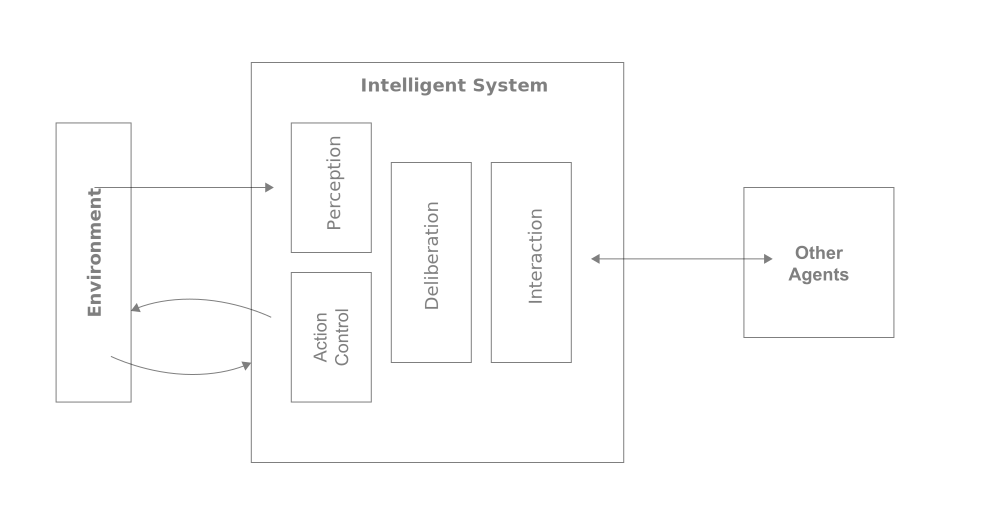</p>
<figcaption>Rational decisions affect different cognitive abilities <span class="citation" data-cites="Molina2020Intelligent">(<a href="#/literature" role="doc-biblioref" onclick="">Molina 2020</a>)</span></figcaption>
</figure>
</div>
<div class="quarto-figure quarto-figure-left">
<figure>
<p></p>
<figcaption>&nbsp;</figcaption>
</figure>
</div>
<div class="quarto-figure quarto-figure-left">
<figure>
<p>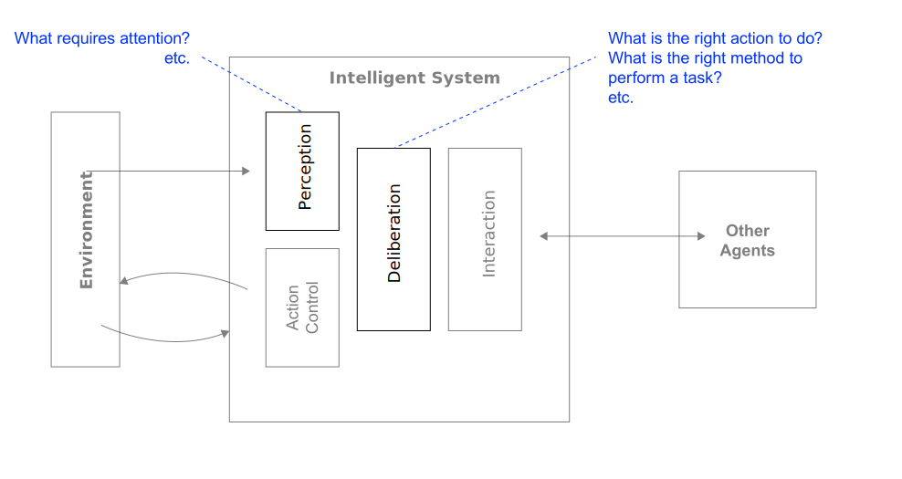</p>
<figcaption>&nbsp;</figcaption>
</figure>
</div>
<div class="quarto-figure quarto-figure-left">
<figure>
<p>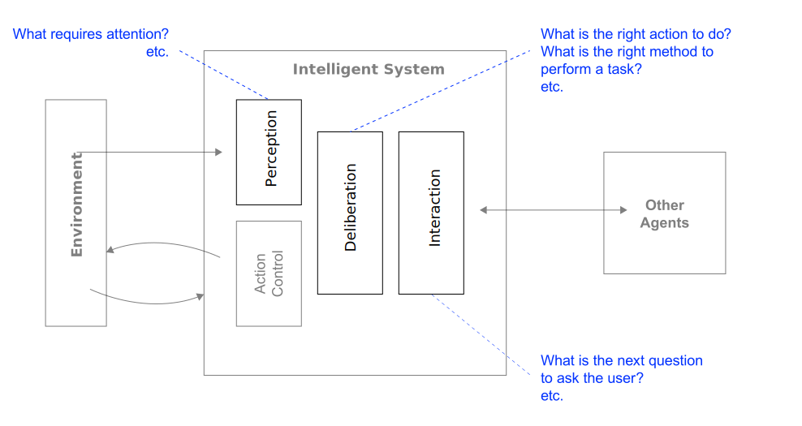</p>
<figcaption>&nbsp;</figcaption>
</figure>
</div>
<div class="quarto-figure quarto-figure-left">
<figure>
<p>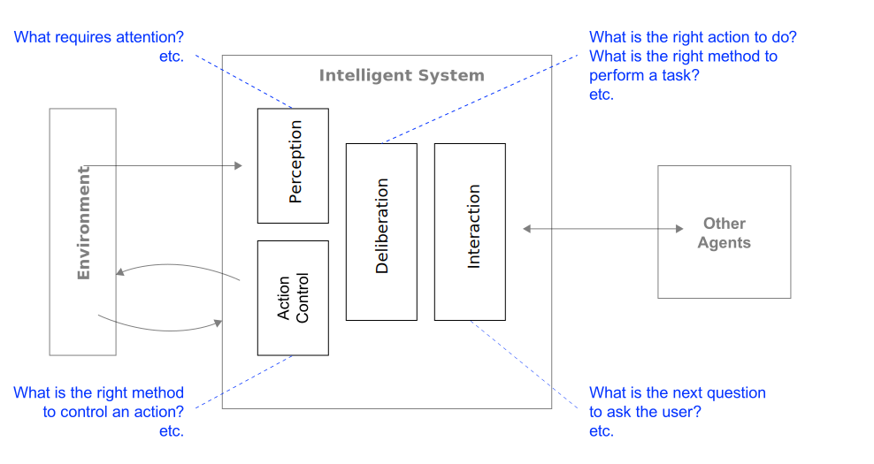</p>
<figcaption>&nbsp;</figcaption>
</figure>
</div>
</div>
</section>

<section id="learning" class="title-slide slide level3">
<h3>Learning</h3>
<blockquote>
<p>Learning agents are those that can improve their behavior through diligent study of past experiences and predictions of the future <em><span class="citation" data-cites="RusselNorvig2022AIMA">Russel and Norvig (<a href="#/literature" role="doc-biblioref" onclick="">2022, 668</a>)</span></em></p>
</blockquote>
<div class="fragment">
<p>A learning agent</p>
<div>
<ul>
<li class="fragment">uses so-called <strong>machine learning</strong> (ML), if it is a computer;</li>
<li class="fragment">improves performance based on experience (i.e., observations of the world);</li>
<li class="fragment">is required when the designer lacks omniscience (i.e., in unknown environments) and/or</li>
<li class="fragment">has no idea how to program a solution themselves (e.g., recognizing faces)</li>
</ul>
</div>
</div>
</section>

<section id="learning-types" class="title-slide slide level3">
<h3>Learning types</h3>
<p><span class="large">Supervised learning</span><br>
<span class="link-color fragment">Involves learning a function from examples <em>➞ test and training data</em></span></p>
<p><span class="large">Unsupervised learning</span><br>
<span class="link-color fragment">The agent has to learn patterns in the input <em>➞ identification of categories or classifications</em></span></p>
<p><span class="large">Reinforcement learning</span><br>
<span class="link-color fragment">The agent must learn from punishments or rewards <em>➞ learning by trial and error</em></span></p>
</section>

<section id="learning-and-cognitive-abilities" class="title-slide slide level3">
<h3>Learning and cognitive abilities</h3>
<div class="r-stack">
<div class="quarto-figure quarto-figure-left">
<figure>
<p></p>
<figcaption>Adaptation through learning can affect differnt cognitive abilities <span class="citation" data-cites="Molina2020Intelligent">(<a href="#/literature" role="doc-biblioref" onclick="">Molina 2020</a>)</span></figcaption>
</figure>
</div>
<div class="quarto-figure quarto-figure-left">
<figure>
<p>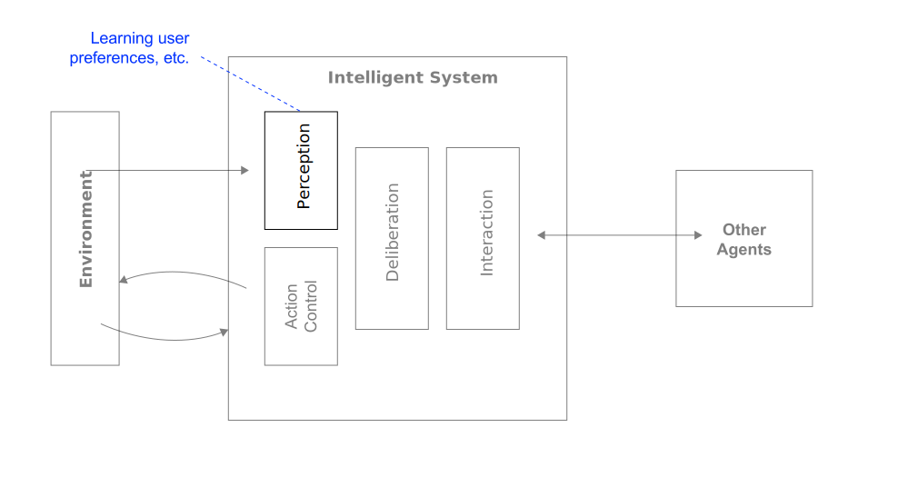</p>
<figcaption>&nbsp;</figcaption>
</figure>
</div>
<div class="quarto-figure quarto-figure-left">
<figure>
<p></p>
<figcaption>&nbsp;</figcaption>
</figure>
</div>
<div class="quarto-figure quarto-figure-left">
<figure>
<p></p>
<figcaption>&nbsp;</figcaption>
</figure>
</div>
<div class="quarto-figure quarto-figure-left">
<figure>
<p>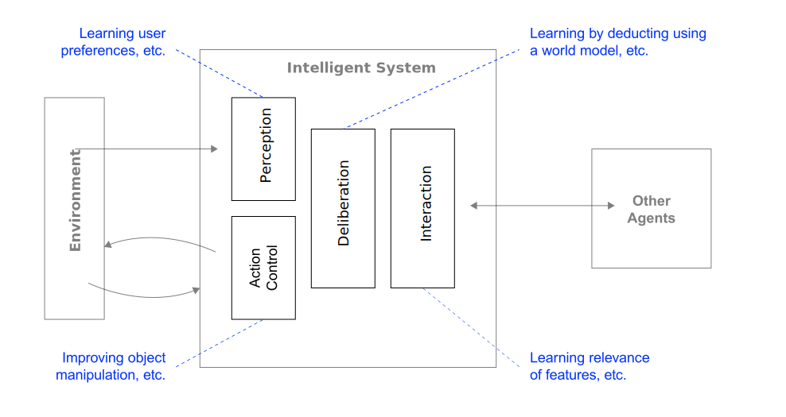</p>
<figcaption>&nbsp;</figcaption>
</figure>
</div>
</div>
</section>

<section id="introspection" class="title-slide slide level3">
<h3>Introspection</h3>
<div class="medium">
<p>Introspection refers to the capabilitiy to <strong>analyze one’s cognitive abilities</strong>.</p>
</div>
<p>The system uses an <span class="link-color">observable model of its own abilities</span>.&nbsp;<br>
<span class="fragment">This model is used to simulate self-awareness processes.</span></p>
<div class="fragment">
<p>Introspection allows the system …</p>
<div>
<ul>
<li class="fragment">… to judge its own actions and, thus, provides <span class="link-color">learning opportunities</span> <br> (e.g., analyzing past outputs ot identify errors or biases) and</li>
<li class="fragment">… to <span class="link-color">generate explanations</span> and, thus, to justify decisions to the user <br> (e.g., explainable AI — showing how a systems arrives at a solution)</li>
</ul>
</div>
</div>
</section>


<section id="summary" class="title-slide slide level2" data-background-color="#f0f0f0">
<h2>Summary</h2>
<p>The properties of an intelligent system are</p>
<p><span class="medium fragment">Capacity to work in a <br> complex environment</span><br>
<span class="fragment fade-in-then-semi-out">Interaction with the environment and other agents</span></p>
<p><span class="medium fragment">Cognitive abilities</span><br>
<span class="fragment fade-in-then-semi-out">Perception, action control, deliberation, and interaction</span></p>
<p><span class="medium fragment">Complex behavior</span><br>
<span class="fragment fade-in-then-semi-out">Acting rationally, adaptation through learning, and introspection</span></p>
</section>
<section id="exercise-3" class="title-slide slide level3 html-hidden unlisted discussion-slide" data-background-color="black">
<h3>Exercise</h3>
<div class="large">
<p>Select an intelligent system and analyse it using the properties outlined here.</p>
</div>
<p>Form small group and take 20 minutes to work on a comprehensive analysis.<br>
Prepare a short presentation and prepare yourself to perform it.</p>
</section>

</section>
<section>
<section id="affections" class="title-slide slide level1 headline-only">
<h1>Affections</h1>

</section>
<section id="affective-computing" class="title-slide slide level2" data-background-color="#f0f0f0">
<h2>Affective computing</h2>
<div class="large">
<p>Computing that relates to, arises from or deliberately influences emotion.</p>
</div>

<aside><div>
<p><span class="citation" data-cites="picard2000affective">Picard (<a href="#/literature" role="doc-biblioref" onclick="">2000</a>)</span></p>
</div></aside></section>

<section id="objectives" class="title-slide slide level2">
<h2>Objectives</h2>
<div class="medium">
<p>Assigning systems “the human-like capabilities of observation, interpretation and generation of affect features<a href="#/footnotes" class="footnote-ref" id="fnref4" role="doc-noteref" data-footnote-href="#/fn4" onclick=""><sup>4</sup></a>” <span class="smaller"><span class="citation" data-cites="tao2005affective">(<a href="#/literature" role="doc-biblioref" onclick="">Tao and Tan 2005, 981</a>)</span></span></p>
</div>
<div class="fragment">
<p>The goal is to simulate empathy — that affective systems can interpret the emotional states of humans and adapt their behavior to them, giving an appropriate response for those emotions (i.e., <em>emotion aware systems</em>).</p>
</div>
<aside></aside></section>

<section id="properties-2" class="title-slide slide level2">
<h2>Properties</h2>
<p><span class="medium fragment">Emotion recognition</span><br>
<span class="fragment fade-in-then-semi-out">Interpreting the emotional states of humans</span></p>
<p><span class="medium fragment">Emotion expresssion</span><br>
<span class="fragment fade-in-then-semi-out">Ability to simulate human affects (e.g.&nbsp;‘emotional modality’)</span></p>
<p><span class="medium fragment">Adequate response to emotion</span><br>
<span class="fragment fade-in-then-semi-out">Linking emotion recognition and expression e.g., to reinforce the meaning of messages</span></p>
</section>

<section id="emotional-signals" class="title-slide slide level2">
<h2>Emotional signals</h2>
<div class="medium">
<p><span class="highlight-current-blue fragment">Facial expression</span>, <span class="highlight-current-blue fragment">posture</span>, <span class="highlight-current-blue fragment">speech</span>, <span class="highlight-current-blue fragment">force or rhythm of key stroke</span>, <span class="highlight-current-blue fragment">temperature change</span> (e.g., hand on mouse) can signify changes in user’s emotional state.</p>
</div>
<div class="fragment">
<p>These can be detected and interpreted by an affective system.</p>
</div>
<div class="fragment">
<p>Affective systems can use some of these to simulate emoptions.</p>
</div>
</section>

<section id="basic-emotions" class="title-slide slide level2">
<h2>Basic emotions</h2>
<p><span class="citation" data-cites="ekman1987universals">Ekman et al. (<a href="#/literature" role="doc-biblioref" onclick="">1987</a>)</span> categorized emotions into 6 groups:</p>
<div class="large">
<p><span class="fragment fade-in-then-semi-out">Fear,</span> <span class="fragment fade-in-then-semi-out">surprise,</span> <span class="fragment fade-in-then-semi-out">disgust,</span> <span class="fragment fade-in-then-semi-out">anger,</span> <span class="fragment fade-in-then-semi-out">happiness,</span> <span class="fragment fade-in-then-semi-out">and sadness</span></p>
</div>
<div class="fragment">
<p>All of these can facially expressed.</p>
</div>
</section>

<section id="examples" class="title-slide slide level2">
<h2>Examples</h2>
<ul>
<li><strong>Facial expression analysis</strong><br>
Using computer vision and machine learning to analyze facial expressions and determine the emotional state of a person.</li>
<li><strong>Voice analysis</strong><br>
Analyzing the tone, pitch, and other characteristics of a person’s voice to determine their emotional state.</li>
<li><strong>Physiological sensing</strong><br>
Using wearable devices to monitor physiological signals such as heart rate, skin conductance, and body temperature to detect emotional responses.</li>
<li><strong>Emotion simulation</strong><br>
Developing systems that can generate emotional responses, such as a virtual assistant that can express empathy or a chatbot that can adapt its tone based on the user’s emotional state.</li>
</ul>
</section>

<section id="exercise-4" class="title-slide slide level2 html-hidden unlisted discussion-slide" data-background-color="black">
<h2>Exercise</h2>
<div class="large">
<p>Search for real-life use cases for affective computing.</p>
</div>
<p>Form small group and take 15 minutes for your research.<br>
Prepare a short presentation of a use case and the technologies that enable it.<br>
Relate them to the basic properties of affective systems.<br>
Argue why affective computing is effective in this use case.</p>
</section>
</section>
<section>
<section id="hybrid-intelligence" class="title-slide slide level1 headline-only">
<h1>Hybrid intelligence</h1>

</section>
<section id="homework" class="title-slide slide level2">
<h2>Homework</h2>
<p>Form small groups and synthesize your findings from reading <span class="citation" data-cites="dellermann2019hybrid">Dellermann et al. (<a href="#/literature" role="doc-biblioref" onclick="">2019</a>)</span> by findings answers to following questions:</p>
<ol type="1">
<li>How can hybrid intelligence be defined?</li>
<li>What are main characteristics of hybrid intelligence?</li>
<li>What are complementary strengths of humans and machines?</li>
<li>What implications does that concept have for practice?</li>
</ol>
<p>Take 15 minutes to synthesize your findings and to create a short presentation.</p>
</section>

<section id="concept" class="title-slide slide level2">
<h2>Concept</h2>
<div class="medium">
<p>The idea is to combine the complementary capabilities of humans and computers to augment each other.</p>
</div>

<aside><div>
<p><span class="citation" data-cites="dellermann2019hybrid">Dellermann et al. (<a href="#/literature" role="doc-biblioref" onclick="">2019</a>)</span></p>
</div></aside></section>

<section id="complementary-strengths" class="title-slide slide level2">
<h2>Complementary strengths</h2>
<div class="columns">
<div class="column">
<p><span class="medium link-color">Human intelligence</span></p>
<p><span class="fragment" data-fragment-index="1">Flexibility &amp; transfer</span></p>
<p><span class="fragment" data-fragment-index="2">Empathy &amp; creativity</span></p>
<p><span class="fragment" data-fragment-index="3">Eventualities</span></p>
<p><span class="fragment" data-fragment-index="4">Common sense</span></p>
<p><span class="fragment" data-fragment-index="5"><strong>Intuition</strong></span></p>
</div><div class="column">
<p><span class="medium link-color">Artificial intelligence</span></p>
<p><span class="fragment" data-fragment-index="1">Pattern recognition</span></p>
<p><span class="fragment" data-fragment-index="2">Probabilistic</span></p>
<p><span class="fragment" data-fragment-index="3">Consistency</span></p>
<p><span class="fragment" data-fragment-index="4">Speed &amp; efficiency</span></p>
<p><span class="fragment" data-fragment-index="5"><strong>Analysis</strong></span></p>
</div></div>
<aside class="notes">
<p>Humans are flexible, creative, empathic, and can adapt to various settings. This allows, for instance, human domain experts to deal with so called ‘‘broken-leg’’ predictions that deviate from the currently known probability distribution. However, they are restricted by bound rationality that prevents them from aggregating information perfectly and drawing conclusions from that. On the other hand, machines are particularly good at solving repetitive tasks that require fast processing of huge amounts of data, at recognizing complex patterns, or weighing multiple factors following consistent rules of probability theory <span class="citation" data-cites="dellermann2019hybrid">(<a href="#/literature" role="doc-biblioref" onclick="">Dellermann et al. 2019</a>)</span>.</p>
<p>However, there is also a technology-centric perspective that assumes that true intelligence can ultimately only be found in well-developed and mature (general) AI systems. Humans are biologically limited in their information processing and reasoning abilities and exhibit many types of cognitive biases, while computers offer virtually infinite possibilities to develop rational intelligence at human levels and beyond <span class="citation" data-cites="peeters2021hybrid">(<a href="#/literature" role="doc-biblioref" onclick="">Peeters et al. 2021</a>)</span>.</p>
<p><strong>Model of human cognition</strong></p>
<p><span class="citation" data-cites="kahneman2011thinking">Kahneman (<a href="#/literature" role="doc-biblioref" onclick="">2011</a>)</span> proposed a two-system model of human cognition, which he called System 1 and System 2.</p>
<p>System 1 is an intuitive, automatic, and fast mode of thinking that operates outside of our conscious awareness. It is responsible for generating impressions, making quick judgments, and executing routine tasks with minimal effort.</p>
<p>System 2, on the other hand, is a more analytical, controlled, and deliberate mode of thinking that requires conscious effort and attention. It is responsible for problem-solving, critical thinking, and decision-making.</p>
<p>While System 1 operates quickly and automatically, it can be prone to biases and errors, particularly in complex or unfamiliar situations. System 2, though slower and more effortful, can help us avoid these biases and make more accurate decisions.</p>
<style type="text/css">
        span.MJX_Assistive_MathML {
          position:absolute!important;
          clip: rect(1px, 1px, 1px, 1px);
          padding: 1px 0 0 0!important;
          border: 0!important;
          height: 1px!important;
          width: 1px!important;
          overflow: hidden!important;
          display:block!important;
      }</style></aside>
</section>

<section id="definition" class="title-slide slide level2">
<h2>Definition</h2>
<blockquote>
<p><strong>Hybrid intelligence</strong> is defined as the ability to achieve complex goals by combining human and artificial intelligence, thereby reaching superior results to those each of them could have accomplished separately, and continuously improve by learning from each other. <em><span class="citation" data-cites="dellermann2019hybrid">Dellermann et al. (<a href="#/literature" role="doc-biblioref" onclick="">2019, 640</a>)</span></em></p>
</blockquote>
<p>Main characteristics of hybrid intelligence are:</p>
<div>
<ul>
<li class="fragment"><strong>Collectively</strong><br>
Tasks are performed collectively and activities are conditionally dependent</li>
<li class="fragment"><strong>Superior results</strong><br>
Neither AI nor humans could have achieved the outcome without the other</li>
<li class="fragment"><strong>Continuous learning</strong><br>
All components of the socio-technical system learn from each other through experience</li>
</ul>
</div>
</section>

<section id="visualization" class="title-slide slide level2">
<h2>Visualization</h2>
<div class="quarto-figure quarto-figure-left">
<figure>
<p>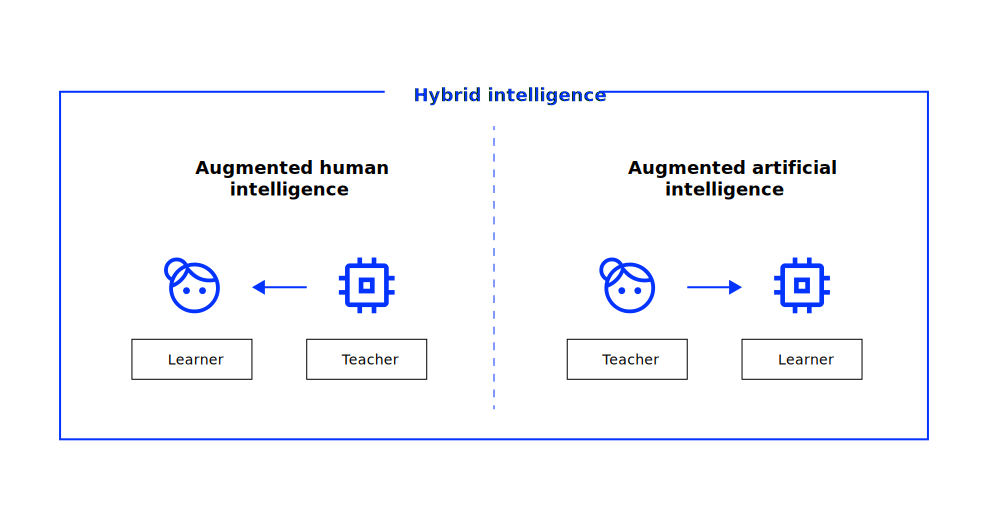</p>
<figcaption>Distribution of roles in hybrid intelligence <span class="citation" data-cites="dellermann2019hybrid">(<a href="#/literature" role="doc-biblioref" onclick="">Dellermann et al. 2019, 640</a>)</span></figcaption>
</figure>
</div>
</section>

<section id="general-observations" class="title-slide slide level2">
<h2>General observations</h2>
<p><span class="citation" data-cites="peeters2021hybrid">Peeters et al. (<a href="#/literature" role="doc-biblioref" onclick="">2021</a>)</span> see following evidence that support a hybrid intelligence perspective:</p>
<div>
<ul>
<li class="fragment">In various domains, <strong>unforeseen emergent effects</strong> at the systemic level can be observed<br>
(e.g., sustaining biases with hiring software and other decision support systems)</li>
<li class="fragment">One of the biggest challenges is <strong>to seamlessly integrate AI systems</strong> in human processes and workflows (e.g., autonomous cars and robots)</li>
<li class="fragment">At the level of teams, AI applications and humans together form human–agent teams<br>
(e.g., RPA integrated in a team)</li>
</ul>
</div>
<div class="fragment">
<p><span class="link-color">Observability</span><a href="#/footnotes" class="footnote-ref" id="fnref5" role="doc-noteref" data-footnote-href="#/fn5" onclick=""><sup>5</sup></a>, <span class="link-color">predictability</span><a href="#/footnotes" class="footnote-ref" id="fnref6" role="doc-noteref" data-footnote-href="#/fn6" onclick=""><sup>6</sup></a>, <span class="link-color">explainability</span><a href="#/footnotes" class="footnote-ref" id="fnref7" role="doc-noteref" data-footnote-href="#/fn7" onclick=""><sup>7</sup></a>, and <span class="link-color">directability</span><a href="#/footnotes" class="footnote-ref" id="fnref8" role="doc-noteref" data-footnote-href="#/fn8" onclick=""><sup>8</sup></a> are important requirements for the effective design of hybrid intelligence</p>
</div>
<aside></aside></section>

<section id="implications" class="title-slide slide level2">
<h2>Implications</h2>
<p>According to <span class="citation" data-cites="peeters2021hybrid">Peeters et al. (<a href="#/literature" role="doc-biblioref" onclick="">2021</a>)</span> following conclusions can be drawn:</p>
<div>
<ul>
<li class="fragment">Intelligence should not be studied at the level of individual humans or AI-machines, but <strong>at the group level</strong> of humans and AI-machines working together.</li>
<li class="fragment">Increasing the intelligence of a system should be achieved by <strong>increasing the quality of the interaction between its constituents</strong> rather than the intelligence of the constituents themselves.</li>
<li class="fragment">Both human as well as artificial intelligence can be regarded as very shallow when considered in isolation.</li>
<li class="fragment">No AI is an island.</li>
</ul>
</div>
</section>

<section id="examples-1" class="title-slide slide level2">
<h2>Examples</h2>
<dl>
<dt><a href="https://www.robotsindeklas.nl/">Robots in de klas</a></dt>
<dd>
A team consisting of a remedial teacher, an educational therapist, and a Nao robot collaborate to support a child with learning difficulties. The robot provides expertise and advice while also helping the child stay focused and engaged.
</dd>
</dl>
<div class="fragment">
<dl>
<dt><a href="https://www.thefader.com/2019/05/21/holly-herndon-proto-ai-spawn-interview">Spawn</a></dt>
<dd>
The musician Holly Herndon created “Spawn,” an AI system that generates unique music different from her usual style. By using Spawn as a tool, Holly is able to avoid creating music that repeats her previous works but to to expand the possibilities of their music.
</dd>
</dl>
</div>
<div class="fragment">
<p><strong>What examples do come to your mind?</strong></p>
</div>
</section>

<section id="explainable-ai-and-human-cognition" class="title-slide slide level2">
<h2>Explainable AI and human cognition</h2>
<p><span class="citation" data-cites="bauer2023expl">Bauer, Zahn, and Hinz (<a href="#/literature" role="doc-biblioref" onclick="">2023</a>)</span> show that <strong>AI systems that provide explanations</strong> (XAI) in addition to predictions <a href="#/footnotes" class="footnote-ref" id="fnref9" role="doc-noteref" data-footnote-href="#/fn9" onclick=""><sup>9</sup></a> may</p>
<div>
<ul>
<li class="fragment">draw users’ attention excessively to the explanations (i.e., those that confirm their prior beliefs<a href="#/footnotes" class="footnote-ref" id="fnref10" role="doc-noteref" data-footnote-href="#/fn10" onclick=""><sup>10</sup></a>) rather than adhering to the prediction,</li>
<li class="fragment">diminish employees’ decision-making performance for the task at hand,</li>
<li class="fragment">lead individuals to carry over learned patterns to other domains (e.g., biased explanations),</li>
<li class="fragment">decrease individual level-noise in the decision-making process (i.e., an individual’s decisions become more consistent),</li>
<li class="fragment">additionally foster differences in the decision-making process across subgroups of users that possess heterogeneous priors.</li>
</ul>
</div>
<div class="fragment">
<p>A focus on the explanation as well as increased decision variance can substantially contribute to errors and ultimately harm business performance (see e.g., <span class="citation" data-cites="kahneman2021noise">Kahneman, Sibony, and Sunstein (<a href="#/literature" role="doc-biblioref" onclick="">2021</a>)</span>.</p>
</div>
<aside></aside></section>
</section>
<section id="qa" class="title-slide slide level1 html-hidden unlisted headline-only vertical-center" data-background-color="#0333ff" data-background-image="../assets/bg.jpg">
<h1>Q&amp;A</h1>

</section>

<section id="literature" class="title-slide slide level1 smaller scrollable">
<h1>Literature</h1>
<div id="refs" class="references csl-bib-body hanging-indent" data-entry-spacing="0" role="list">
<div id="ref-adami2016introducing" class="csl-entry" role="listitem">
Adami, Elisabetta. 2016. <span>“Introducing Multimodality.”</span> <em>The Oxford Handbook of Language and Society</em>, 451–72.
</div>
<div id="ref-bauer2023expl" class="csl-entry" role="listitem">
Bauer, Kevin, Moritz von Zahn, and Oliver Hinz. 2023. <span>“Expl (AI) Ned: The Impact of Explainable Artificial Intelligence on Users’ Information Processing.”</span> <em>Information Systems Research</em>.
</div>
<div id="ref-carroll1993human" class="csl-entry" role="listitem">
Carroll, John Bissell. 1993. <em>Human Cognitive Abilities: A Survey of Factor-Analytic Studies</em>. 1. Cambridge university press.
</div>
<div id="ref-dellermann2019hybrid" class="csl-entry" role="listitem">
Dellermann, Dominik, Philipp Ebel, Matthias Söllner, and Jan Marco Leimeister. 2019. <span>“Hybrid Intelligence.”</span> <em>Business &amp; Information Systems Engineering</em> 61: 637–43.
</div>
<div id="ref-ekman1987universals" class="csl-entry" role="listitem">
Ekman, Paul, Wallace V Friesen, Maureen O’sullivan, Anthony Chan, Irene Diacoyanni-Tarlatzis, Karl Heider, Rainer Krause, et al. 1987. <span>“Universals and Cultural Differences in the Judgments of Facial Expressions of Emotion.”</span> <em>Journal of Personality and Social Psychology</em> 53 (4): 712.
</div>
<div id="ref-euAIAct2024" class="csl-entry" role="listitem">
European Commission. 2024. <span>“Artificial Intelligence in the European Commission — a Strategic Vision to Foster the Development and Use of Lawful, Safe and Trustworthy Artificial Intelligence Systems in the European Commission”</span> C(2024) 380.
</div>
<div id="ref-kahneman2011thinking" class="csl-entry" role="listitem">
Kahneman, Daniel. 2011. <em>Thinking, Fast and Slow</em>. macmillan.
</div>
<div id="ref-kahneman2021noise" class="csl-entry" role="listitem">
Kahneman, Daniel, Olivier Sibony, and Cass R Sunstein. 2021. <em>Noise: A Flaw in Human Judgment</em>. Hachette UK.
</div>
<div id="ref-lee2013presence" class="csl-entry" role="listitem">
Lee, Hyuck-Gi, Sungwon Chung, and Won-Hee Lee. 2013. <span>“Presence in Virtual Golf Simulators: The Effects of Presence on Perceived Enjoyment, Perceived Value, and Behavioral Intention.”</span> <em>New Media &amp; Society</em> 15 (6): 930–46.
</div>
<div id="ref-Molina2020Intelligent" class="csl-entry" role="listitem">
Molina, Martin. 2020. <span>“Intelligent Systems.”</span> <em>Master Course (Lecture Slides)</em>.
</div>
<div id="ref-peeters2021hybrid" class="csl-entry" role="listitem">
Peeters, Marieke MM, Jurriaan van Diggelen, Karel Van Den Bosch, Adelbert Bronkhorst, Mark A Neerincx, Jan Maarten Schraagen, and Stephan Raaijmakers. 2021. <span>“Hybrid Collective Intelligence in a Human–AI Society.”</span> <em>AI &amp; Society</em> 36: 217–38.
</div>
<div id="ref-picard2000affective" class="csl-entry" role="listitem">
Picard, Rosalind W. 2000. <em>Affective Computing</em>. MIT press.
</div>
<div id="ref-RusselNorvig2022AIMA" class="csl-entry" role="listitem">
Russel, Stuart, and Peter Norvig. 2022. <em>Artificial Intelligence: A Modern Approach</em>. Harlow: Pearson Education.
</div>
<div id="ref-sternberg1985beyond" class="csl-entry" role="listitem">
Sternberg, Robert J et al. 1985. <em>Beyond IQ: A Triarchic Theory of Human Intelligence</em>. CUP Archive.
</div>
<div id="ref-suh2018state" class="csl-entry" role="listitem">
Suh, Ayoung, and Jane Prophet. 2018. <span>“The State of Immersive Technology Research: A Literature Analysis.”</span> <em>Computers in Human Behavior</em> 86: 77–90.
</div>
<div id="ref-tao2005affective" class="csl-entry" role="listitem">
Tao, Jianhua, and Tieniu Tan. 2005. <span>“Affective Computing: A Review.”</span> In <em>International Conference on Affective Computing and Intelligent Interaction</em>, 981–95. Springer.
</div>
<div id="ref-Wiener1960Some" class="csl-entry" role="listitem">
Wiener, Norbert. 1960. <span>“Some Moral and Technical Consequences of Automation.”</span> <em>Science</em> 131 (3410): 1355–58.
</div>
</div>


</section>

<section id="footnotes" class="footnotes footnotes-end-of-document smaller scrollable" role="doc-endnotes"><h5>Footnotes</h5>

<ol>
<li id="fn1"><p>The capacity to work in a complex environment is described as agency</p></li>
<li id="fn2"><p>Cognitive abilities are, for instance, perception and language</p></li>
<li id="fn3"><p>Intelligent behavior is reflected, for instance, by rationality and learning</p></li>
<li id="fn4"><p>”Affect” is basically a synonym for emotion.</p></li>
<li id="fn5"><p>Observability means that an actor should make its status, its knowledge of the team, task, and environment observable to others.</p></li>
<li id="fn6"><p>Predictability means that an actor should behave predictably such that others can rely on them when considering their own actions.</p></li>
<li id="fn7"><p>Directability means that actors should have the opportunity to (re-)direct each other’s behavior.</p></li>
<li id="fn8"><p>Explainability means that agents should be capable of explaining their behavior to others</p></li>
<li id="fn9"><p>Will become a regulatory standard and many domains</p></li>
<li id="fn10"><p>A phenomenon called <em>confirmation bias</em></p></li>
</ol>
</section>
    </div>
  <div class="quarto-auto-generated-content" style="display: none;">
<div class="footer footer-default">

</div>
</div></div>

  <script>window.backupDefine = window.define; window.define = undefined;</script>
  <script src="../../../../site_libs/revealjs/dist/reveal.js"></script>
  <!-- reveal.js plugins -->
  <script src="../../../../site_libs/revealjs/plugin/quarto-line-highlight/line-highlight.js"></script>
  <script src="../../../../site_libs/revealjs/plugin/pdf-export/pdfexport.js"></script>
  <script src="../../../../site_libs/revealjs/plugin/reveal-menu/menu.js"></script>
  <script src="../../../../site_libs/revealjs/plugin/reveal-menu/quarto-menu.js"></script>
  <script src="../../../../site_libs/revealjs/plugin/quarto-support/support.js"></script>
  

  <script src="../../../../site_libs/revealjs/plugin/notes/notes.js"></script>
  <script src="../../../../site_libs/revealjs/plugin/search/search.js"></script>
  <script src="../../../../site_libs/revealjs/plugin/zoom/zoom.js"></script>
  <script src="../../../../site_libs/revealjs/plugin/math/math.js"></script>
  <script>window.define = window.backupDefine; window.backupDefine = undefined;</script>

  <script>

      // Full list of configuration options available at:
      // https://revealjs.com/config/
      Reveal.initialize({
'controlsAuto': false,
'previewLinksAuto': false,
'pdfSeparateFragments': false,
'autoAnimateEasing': "ease",
'autoAnimateDuration': 1,
'autoAnimateUnmatched': true,
'jumpToSlide': true,
'menu': {"side":"left","useTextContentForMissingTitles":true,"markers":false,"loadIcons":false,"custom":[{"title":"Tools","icon":"<i class=\"fas fa-gear\"></i>","content":"<ul class=\"slide-menu-items\">\n<li class=\"slide-tool-item active\" data-item=\"0\"><a href=\"#\" onclick=\"RevealMenuToolHandlers.fullscreen(event)\"><kbd>f</kbd> Fullscreen</a></li>\n<li class=\"slide-tool-item\" data-item=\"1\"><a href=\"#\" onclick=\"RevealMenuToolHandlers.speakerMode(event)\"><kbd>s</kbd> Speaker View</a></li>\n<li class=\"slide-tool-item\" data-item=\"2\"><a href=\"#\" onclick=\"RevealMenuToolHandlers.overview(event)\"><kbd>o</kbd> Slide Overview</a></li>\n<li class=\"slide-tool-item\" data-item=\"3\"><a href=\"#\" onclick=\"RevealMenuToolHandlers.togglePdfExport(event)\"><kbd>e</kbd> PDF Export Mode</a></li>\n<li class=\"slide-tool-item\" data-item=\"4\"><a href=\"#\" onclick=\"RevealMenuToolHandlers.toggleScrollView(event)\"><kbd>r</kbd> Scroll View Mode</a></li>\n<li class=\"slide-tool-item\" data-item=\"5\"><a href=\"#\" onclick=\"RevealMenuToolHandlers.keyboardHelp(event)\"><kbd>?</kbd> Keyboard Help</a></li>\n</ul>"}],"openButton":true},
'smaller': false,
 
        // Display controls in the bottom right corner
        controls: false,

        // Help the user learn the controls by providing hints, for example by
        // bouncing the down arrow when they first encounter a vertical slide
        controlsTutorial: false,

        // Determines where controls appear, "edges" or "bottom-right"
        controlsLayout: 'edges',

        // Visibility rule for backwards navigation arrows; "faded", "hidden"
        // or "visible"
        controlsBackArrows: 'faded',

        // Display a presentation progress bar
        progress: true,

        // Display the page number of the current slide
        slideNumber: 'c',

        // 'all', 'print', or 'speaker'
        showSlideNumber: 'all',

        // Add the current slide number to the URL hash so that reloading the
        // page/copying the URL will return you to the same slide
        hash: true,

        // Start with 1 for the hash rather than 0
        hashOneBasedIndex: false,

        // Flags if we should monitor the hash and change slides accordingly
        respondToHashChanges: true,

        // Push each slide change to the browser history
        history: true,

        // Enable keyboard shortcuts for navigation
        keyboard: true,

        // Enable the slide overview mode
        overview: false,

        // Disables the default reveal.js slide layout (scaling and centering)
        // so that you can use custom CSS layout
        disableLayout: false,

        // Vertical centering of slides
        center: false,

        // Enables touch navigation on devices with touch input
        touch: true,

        // Loop the presentation
        loop: false,

        // Change the presentation direction to be RTL
        rtl: false,

        // see https://revealjs.com/vertical-slides/#navigation-mode
        navigationMode: 'linear',

        // Randomizes the order of slides each time the presentation loads
        shuffle: false,

        // Turns fragments on and off globally
        fragments: true,

        // Flags whether to include the current fragment in the URL,
        // so that reloading brings you to the same fragment position
        fragmentInURL: false,

        // Flags if the presentation is running in an embedded mode,
        // i.e. contained within a limited portion of the screen
        embedded: false,

        // Flags if we should show a help overlay when the questionmark
        // key is pressed
        help: true,

        // Flags if it should be possible to pause the presentation (blackout)
        pause: true,

        // Flags if speaker notes should be visible to all viewers
        showNotes: false,

        // Global override for autoplaying embedded media (null/true/false)
        autoPlayMedia: null,

        // Global override for preloading lazy-loaded iframes (null/true/false)
        preloadIframes: null,

        // Number of milliseconds between automatically proceeding to the
        // next slide, disabled when set to 0, this value can be overwritten
        // by using a data-autoslide attribute on your slides
        autoSlide: 0,

        // Stop auto-sliding after user input
        autoSlideStoppable: true,

        // Use this method for navigation when auto-sliding
        autoSlideMethod: null,

        // Specify the average time in seconds that you think you will spend
        // presenting each slide. This is used to show a pacing timer in the
        // speaker view
        defaultTiming: null,

        // Enable slide navigation via mouse wheel
        mouseWheel: false,

        // The display mode that will be used to show slides
        display: 'block',

        // Hide cursor if inactive
        hideInactiveCursor: true,

        // Time before the cursor is hidden (in ms)
        hideCursorTime: 5000,

        // Opens links in an iframe preview overlay
        previewLinks: false,

        // Transition style (none/fade/slide/convex/concave/zoom)
        transition: 'fade',

        // Transition speed (default/fast/slow)
        transitionSpeed: 'default',

        // Transition style for full page slide backgrounds
        // (none/fade/slide/convex/concave/zoom)
        backgroundTransition: 'none',

        // Number of slides away from the current that are visible
        viewDistance: 3,

        // Number of slides away from the current that are visible on mobile
        // devices. It is advisable to set this to a lower number than
        // viewDistance in order to save resources.
        mobileViewDistance: 2,

        // The "normal" size of the presentation, aspect ratio will be preserved
        // when the presentation is scaled to fit different resolutions. Can be
        // specified using percentage units.
        width: 1080,

        height: 640,

        // Factor of the display size that should remain empty around the content
        margin: 0,

        math: {
          mathjax: 'https://cdn.jsdelivr.net/npm/mathjax@3/es5/tex-chtml-full.js',
          config: 'TeX-AMS_HTML-full',
          tex2jax: {
            inlineMath: [['\\(','\\)']],
            displayMath: [['\\[','\\]']],
            balanceBraces: true,
            processEscapes: false,
            processRefs: true,
            processEnvironments: true,
            preview: 'TeX',
            skipTags: ['script','noscript','style','textarea','pre','code'],
            ignoreClass: 'tex2jax_ignore',
            processClass: 'tex2jax_process'
          },
        },

        // reveal.js plugins
        plugins: [QuartoLineHighlight, PdfExport, RevealMenu, QuartoSupport,

          RevealMath,
          RevealNotes,
          RevealSearch,
          RevealZoom
        ]
      });
    </script>
    <script>
    // Copy over background colors to new div
    divs = document.querySelectorAll('[data-background-color]');

    Array.from(divs).map(function (x) {
      const color = x.dataset.backgroundColor;

      var new_div = document.createElement('div');
      new_div.setAttribute("class", "background-color-div");
      new_div.style.backgroundColor = color;
      x.appendChild(new_div);
      x.removeAttribute("data-background-color");
    })

    // Remove background colors from backgrounds div
    Array.from(
      document.querySelectorAll("[data-background-hash]")
    ).map(function (x) {
      x.removeAttribute("data-background-hash");
      x.style.backgroundColor = null;
    })
    </script>

    <script>
    // Copy over background images to new div
    divs = document.querySelectorAll('[data-background-image]');

    Array.from(divs).map(function (x) {
      var new_div = document.createElement('div');
      new_div.setAttribute("class", "background-image-div");

      if (x.dataset.backgroundImage != undefined) {
        new_div.style.backgroundImage = "url(" + x.dataset.backgroundImage + ")";
        x.removeAttribute("data-background-image");
      }
      if (x.dataset.backgroundSize != undefined) {
        new_div.style.backgroundSize = x.dataset.backgroundSize;
        x.removeAttribute("data-background-size");
      }
      if (x.dataset.backgroundPosition != undefined) {
        new_div.style.backgroundPosition = x.dataset.backgroundPosition;
        x.removeAttribute("data-background-position");
      }
      if (x.dataset.backgroundRepeat != undefined) {
        new_div.style.backgroundRepeat = x.dataset.backgroundRepeat;
        x.removeAttribute("data-background-repeat");
      }
      if (x.dataset.backgroundOpacity != undefined) {
        new_div.style.backgroundOpacity = x.dataset.backgroundOpacity;
        x.removeAttribute("data-background-opacity");
      }

      x.appendChild(new_div);
    })
    </script>

    <script>
    // Copy over background vidoes

    // Run once when we load
    var video_div = document.querySelectorAll(".backgrounds video");
    var slide_div = document.querySelectorAll("[data-background-video]");

    for (let i = 0; i < video_div.length; i++) {
      video_div[i].setAttribute("class", "background-video-div");

      slide_div[i].appendChild(video_div[i]);
      slide_div[i].removeAttribute("data-background-video");
    }

    Reveal.getCurrentSlide().querySelectorAll(".background-video-div").forEach(x => x.play());

    // Each time we advance slides, as the background videos aren't loaded
    // unless they are a few slides away
    Reveal.on('slidechanged', event => {
      var video_div = document.querySelectorAll(".backgrounds video");
      var slide_div = document.querySelectorAll("[data-background-video]");

      for (let i = 0; i < video_div.length; i++) {
        video_div[i].setAttribute("class", "background-video-div");

        slide_div[i].appendChild(video_div[i]);
        slide_div[i].removeAttribute("data-background-video");
      }

      Reveal.getCurrentSlide().querySelectorAll(".background-video-div").forEach(x => x.play());
    });
    </script>

    <script>
    // Copy over background vidoes

    // Run once when we load
    var iframe_div = document.querySelectorAll(".backgrounds iframe");
    var slide_div = document.querySelectorAll("[data-background-iframe]");

    for (let i = 0; i < iframe_div.length; i++) {
      iframe_div[i].setAttribute("class", "background-iframe-div");

      slide_div[i].appendChild(iframe_div[i]);
      slide_div[i].removeAttribute("data-background-iframe");
    }

    // Each time we advance slides, as the background videos aren't loaded
    // unless they are a few slides away
    Reveal.on('slidechanged', event => {
      var iframe_div = document.querySelectorAll(".backgrounds iframe");
      var slide_div = document.querySelectorAll("[data-background-iframe]");

      for (let i = 0; i < iframe_div.length; i++) {
        iframe_div[i].setAttribute("class", "background-iframe-div");

        slide_div[i].appendChild(iframe_div[i]);
        slide_div[i].removeAttribute("data-background-iframe");
      }
    });
    </script>

    <script>
    // Clean up slide background styles
    divs = document.querySelectorAll('.slide-background-content');
    Array.from(divs).map(function (x) {
      x.style = null;
    })
    </script>

    <script>

      // Move menu button
      menu_div = document.querySelector(".slide-menu-button");
      document.querySelector(".slides").appendChild(menu_div);
      
      // Move progress bar
      menu_div = document.querySelector(".progress");
      document.querySelector(".slides").appendChild(menu_div);
      
      // Move slide number
      slide_number = document.querySelector(".slide-number");
      document.querySelector(".slides").appendChild(slide_number);
      
      // Move custom footer
      footer = document.querySelector(".footer.custom");
      document.querySelector(".slides").appendChild(footer);

    </script>

    <script id="quarto-html-after-body" type="application/javascript">
    window.document.addEventListener("DOMContentLoaded", function (event) {
      const toggleBodyColorMode = (bsSheetEl) => {
        const mode = bsSheetEl.getAttribute("data-mode");
        const bodyEl = window.document.querySelector("body");
        if (mode === "dark") {
          bodyEl.classList.add("quarto-dark");
          bodyEl.classList.remove("quarto-light");
        } else {
          bodyEl.classList.add("quarto-light");
          bodyEl.classList.remove("quarto-dark");
        }
      }
      const toggleBodyColorPrimary = () => {
        const bsSheetEl = window.document.querySelector("link#quarto-bootstrap");
        if (bsSheetEl) {
          toggleBodyColorMode(bsSheetEl);
        }
      }
      toggleBodyColorPrimary();  
      const tabsets =  window.document.querySelectorAll(".panel-tabset-tabby")
      tabsets.forEach(function(tabset) {
        const tabby = new Tabby('#' + tabset.id);
      });
      const isCodeAnnotation = (el) => {
        for (const clz of el.classList) {
          if (clz.startsWith('code-annotation-')) {                     
            return true;
          }
        }
        return false;
      }
      const onCopySuccess = function(e) {
        // button target
        const button = e.trigger;
        // don't keep focus
        button.blur();
        // flash "checked"
        button.classList.add('code-copy-button-checked');
        var currentTitle = button.getAttribute("title");
        button.setAttribute("title", "Copied!");
        let tooltip;
        if (window.bootstrap) {
          button.setAttribute("data-bs-toggle", "tooltip");
          button.setAttribute("data-bs-placement", "left");
          button.setAttribute("data-bs-title", "Copied!");
          tooltip = new bootstrap.Tooltip(button, 
            { trigger: "manual", 
              customClass: "code-copy-button-tooltip",
              offset: [0, -8]});
          tooltip.show();    
        }
        setTimeout(function() {
          if (tooltip) {
            tooltip.hide();
            button.removeAttribute("data-bs-title");
            button.removeAttribute("data-bs-toggle");
            button.removeAttribute("data-bs-placement");
          }
          button.setAttribute("title", currentTitle);
          button.classList.remove('code-copy-button-checked');
        }, 1000);
        // clear code selection
        e.clearSelection();
      }
      const getTextToCopy = function(trigger) {
          const codeEl = trigger.previousElementSibling.cloneNode(true);
          for (const childEl of codeEl.children) {
            if (isCodeAnnotation(childEl)) {
              childEl.remove();
            }
          }
          return codeEl.innerText;
      }
      const clipboard = new window.ClipboardJS('.code-copy-button:not([data-in-quarto-modal])', {
        text: getTextToCopy
      });
      clipboard.on('success', onCopySuccess);
      if (window.document.getElementById('quarto-embedded-source-code-modal')) {
        const clipboardModal = new window.ClipboardJS('.code-copy-button[data-in-quarto-modal]', {
          text: getTextToCopy,
          container: window.document.getElementById('quarto-embedded-source-code-modal')
        });
        clipboardModal.on('success', onCopySuccess);
      }
        var localhostRegex = new RegExp(/^(?:http|https):\/\/localhost\:?[0-9]*\//);
        var mailtoRegex = new RegExp(/^mailto:/);
          var filterRegex = new RegExp("https:\/\/awe-hnu\.github\.io");
        var isInternal = (href) => {
            return filterRegex.test(href) || localhostRegex.test(href) || mailtoRegex.test(href);
        }
        // Inspect non-navigation links and adorn them if external
     	var links = window.document.querySelectorAll('a[href]:not(.nav-link):not(.navbar-brand):not(.toc-action):not(.sidebar-link):not(.sidebar-item-toggle):not(.pagination-link):not(.no-external):not([aria-hidden]):not(.dropdown-item):not(.quarto-navigation-tool):not(.about-link)');
        for (var i=0; i<links.length; i++) {
          const link = links[i];
          if (!isInternal(link.href)) {
            // undo the damage that might have been done by quarto-nav.js in the case of
            // links that we want to consider external
            if (link.dataset.originalHref !== undefined) {
              link.href = link.dataset.originalHref;
            }
          }
        }
      function tippyHover(el, contentFn, onTriggerFn, onUntriggerFn) {
        const config = {
          allowHTML: true,
          maxWidth: 500,
          delay: 100,
          arrow: false,
          appendTo: function(el) {
              return el.closest('section.slide') || el.parentElement;
          },
          interactive: true,
          interactiveBorder: 10,
          theme: 'light-border',
          placement: 'bottom-start',
        };
        if (contentFn) {
          config.content = contentFn;
        }
        if (onTriggerFn) {
          config.onTrigger = onTriggerFn;
        }
        if (onUntriggerFn) {
          config.onUntrigger = onUntriggerFn;
        }
          config['offset'] = [0,0];
          config['maxWidth'] = 700;
        window.tippy(el, config); 
      }
      const noterefs = window.document.querySelectorAll('a[role="doc-noteref"]');
      for (var i=0; i<noterefs.length; i++) {
        const ref = noterefs[i];
        tippyHover(ref, function() {
          // use id or data attribute instead here
          let href = ref.getAttribute('data-footnote-href') || ref.getAttribute('href');
          try { href = new URL(href).hash; } catch {}
          const id = href.replace(/^#\/?/, "");
          const note = window.document.getElementById(id);
          if (note) {
            return note.innerHTML;
          } else {
            return "";
          }
        });
      }
      const findCites = (el) => {
        const parentEl = el.parentElement;
        if (parentEl) {
          const cites = parentEl.dataset.cites;
          if (cites) {
            return {
              el,
              cites: cites.split(' ')
            };
          } else {
            return findCites(el.parentElement)
          }
        } else {
          return undefined;
        }
      };
      var bibliorefs = window.document.querySelectorAll('a[role="doc-biblioref"]');
      for (var i=0; i<bibliorefs.length; i++) {
        const ref = bibliorefs[i];
        const citeInfo = findCites(ref);
        if (citeInfo) {
          tippyHover(citeInfo.el, function() {
            var popup = window.document.createElement('div');
            citeInfo.cites.forEach(function(cite) {
              var citeDiv = window.document.createElement('div');
              citeDiv.classList.add('hanging-indent');
              citeDiv.classList.add('csl-entry');
              var biblioDiv = window.document.getElementById('ref-' + cite);
              if (biblioDiv) {
                citeDiv.innerHTML = biblioDiv.innerHTML;
              }
              popup.appendChild(citeDiv);
            });
            return popup.innerHTML;
          });
        }
      }
    });
    </script>
    

</body></html>